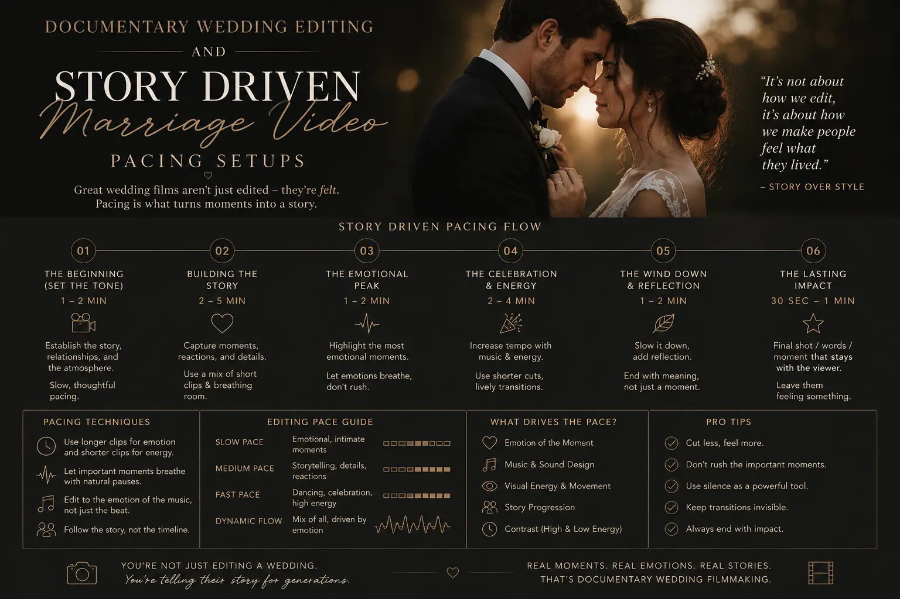
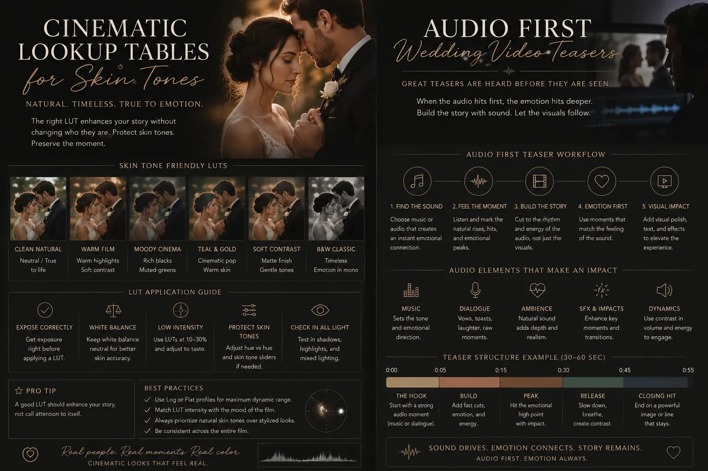

Editing Workflows for Emotional Documentary Wedding Films
Beyond the Highlight Reel: The Return to Documentary Storytelling
For years, the wedding industry was dominated by highly polished music-video style highlight reels. While visually striking, these videos often felt generic, using the same pacing and music transitions for every couple. Modern couples are shifting away from generic clips and looking for deep, story-driven films that preserve actual emotions.
This has led to the adoption of documentary editing workflows. Instead of fitting footage into a song, editors build a narrative around real conversations, vows, and ambient sounds. By investing in **Cinematic wedding videos** and structured **Documentary Wedding Editing**, filmmakers can capture authentic memories.
Through disciplined sound design, natural pacing, and precise color grading, you can transform wedding recordings into a high-end documentary film.
The Audio-First Editing Pipeline: Structuring the Narrative
The key difference between a generic highlight reel and a true documentary film lies in the starting point of the edit. Traditional workflows begin by placing visual highlights on a timeline and overlaying music. A documentary workflow is audio-first: the editor builds the entire story structure using vocal tracks before touching the visuals.
This process begins by logging all speech sources. Vows, toast recordings, letter readings, and ceremony prayers are indexed and cut down to their most impactful statements. By linking these vocal elements together, the editor creates a continuous narrative track that dictates the pacing of the film.
Once the audio structure is solid, the editor adds B-roll footage and camera angles, using the visuals to support and illustrate the spoken story. This ensures the film feels cohesive and focused on real interactions rather than random transitions.
Technical Solutions: Audio-First Workflows and Sound Design
Creating an emotional wedding film requires building a strong audio foundation before editing visual clips.
- Designing story-driven marriage video pacing. To achieve **Story-driven marriage video pacing**, edit the vocal tracks first. Combine the couple's vows, parent toasts, and letters to build a narrative timeline that guides the film.
- Developing audio-first wedding video teasers. Keep short-form previews engaging. Creating **audio-first wedding video teasers** that open with a key emotional statement helps hook viewers on social feeds, driving interest in the full film.
- Precision emotional wedding vows sound design. Vows are the heart of the film. Good **emotional wedding vows sound design** involves cleaning up voice recordings, reducing ambient noise, and mixing in soft background tracks to enhance the emotion.
- Working with a premium video photographer near me. Collaborate with a **premium video photographer near me** to ensure your edit has B-roll support. Capturing close-ups of expressions and venue details provides the visual context needed to support the audio timeline.
Create Emotional Resonance
Building your film around real voices and vows preserves genuine emotions, creating a personal memory that music loops cannot match.
Maintain Visual Variety
A multi-camera setup allows you to switch angles during vows, keeping the visual pace engaging while maintaining focus on the emotions.
Preserve Skin-Tone Accuracy
Using specialized lookup tables balances colors across different lighting, keeping skin tones natural and consistent throughout the film.
Streamline Post-Production
Following a structured editing workflow reduces edit revisions, ensuring your final documentary film is delivered on schedule.

Color Grading for Reality: Preserving Natural Skin Tones
Another critical aspect of documentary videography is color grading. Weddings often feature mixed lighting environments, moving from warm ceremony halls with artificial lights to bright outdoor portrait sessions. This variation can make skin tones look inconsistent across different shots.
To solve this, professional colorists use specialized lookup tables. By applying custom **cinematic lookup tables for skin tones**, editors can balance colors across different camera brands and settings. This calibration ensures skin tones look natural, soft, and realistic, matching the documentary look of the film.
Color grading should support the story's emotion. Warm, soft tones are used for intimate prep scenes, while clean, high-contrast grades bring out the energy of receptions and dances, maintaining visual flow.
Color and Camera Coordination in Documentary Shoots
Maintaining visual consistency across multiple cameras and lighting environments requires technical coordination.
- Using cinematic lookup tables for skin tones. Different cameras interpret colors differently. Applying **cinematic lookup tables for skin tones** ensures skin tones look natural, whether filmed in warm ceremony halls or bright outdoor spaces.
- Deploying a high-end marriage movie crew. A high-end **high-end marriage movie crew** includes dedicated audio operators. Using multiple lapel microphones and directional boom mics ensures clear voice capture during key moments.
- Handling multi-camera synchronization. Use timecode synchronization tools to align multiple camera feeds and audio recorders. This allows editors to switch angles instantly, keeping the visual rhythm aligned with the spoken word.
- Integrating natural light B-roll sequences. Capture slow-motion B-roll of natural light details, such as wind moving through fabrics or sunlight reflecting on jewelry, to create transition points between speech segments.
Documentary Editing Workflow Checklist
Manage your documentary wedding editing pipeline using this step-by-step checklist.
Audio Logging and Assembly
- Log all speech sources: vows, toasts, letters, and ceremony prayers.
- Select the most emotional and narrative vocal clips.
- Build a continuous 10-minute audio sequence that tells the story.
Visual Matching and Cutdowns
- Align multi-camera footage using timecode sync tools.
- Select B-roll clips that match the topic of the spoken words.
- Apply clean cuts and cross-dissolves, avoiding jarring transition effects.
Color Grading and Finishing
- Apply skin-tone LUTs to normalize colors across all cameras.
- Use soft vignettes and warm tones to enhance the documentary look.
- Export the final film in high-bitrate format optimized for home screens.
Integrating Sound and Pacing
Build detail into your sound design to make the film feel real.
- Ambient sound layering. Blend in soft ambient sounds—such as birds chirping, wind, or distant chimes—to anchor scenes in reality.
- Dynamic music scoring. Select background music that supports the dialogue, keeping tracks soft during speech and building during transitions.
- Generational dialogue hooks. Use short clips of grandmother advice or family blessings to add depth to your documentary timeline.

Conclusion
Documentary wedding editing is a powerful way to preserve authentic emotions and create timeless wedding films. By replacing generic music videos with **Cinematic wedding videos** built around real voices, filmmakers can deliver deeply personal stories.
Through structured **Documentary Wedding Editing**, dedicated **emotional wedding vows sound design**, and skin-tone color grading, you can capture authentic memories.
At The PhD Ads in Madurai, we deploy **high-end marriage movie crews**, coordinate with **premium video photographers near me**, and implement professional editing workflows to build emotional wedding films.
Key Topics
Preserve the Soul of Your Wedding Day
Ready to create a story-driven documentary wedding film? At The PhD Ads in Madurai, we coordinate high-end crews, record clear audio, and edit emotional films that preserve your memories.
Email: team@e2o.in